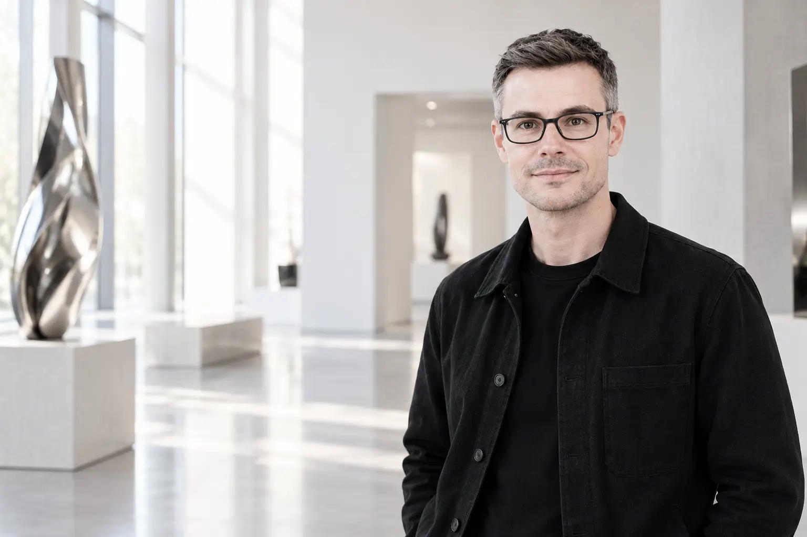
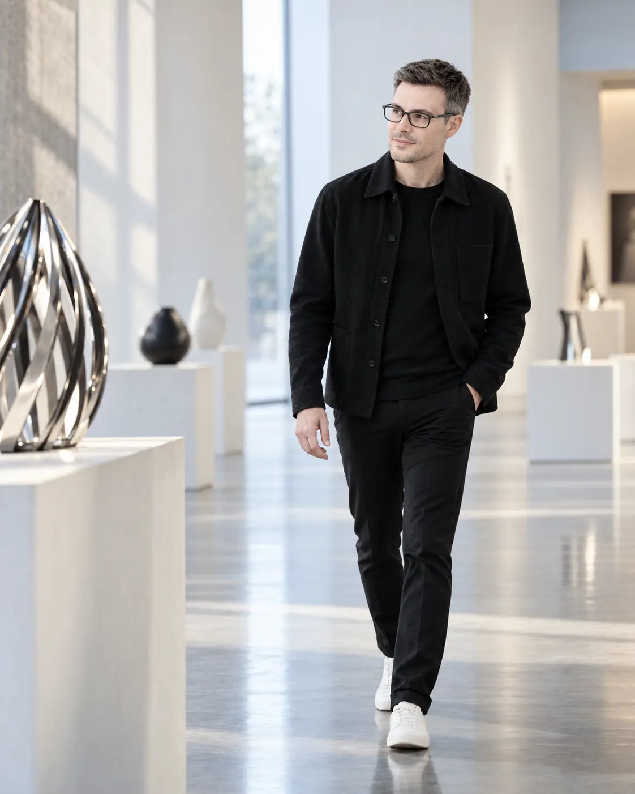
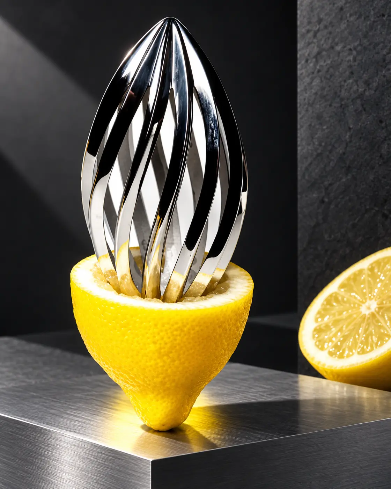
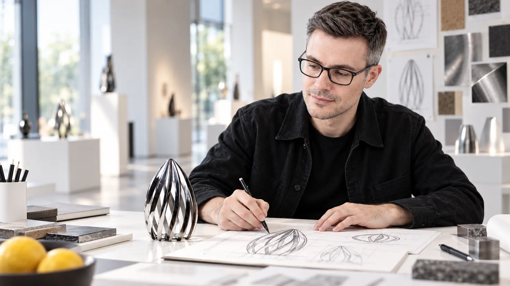
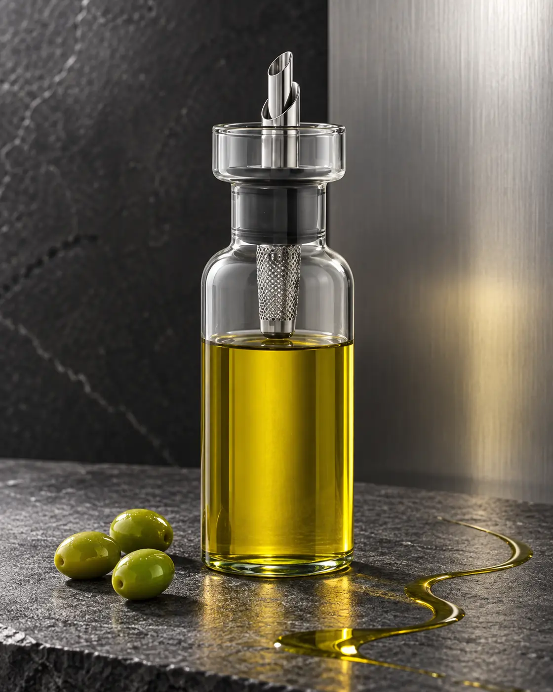
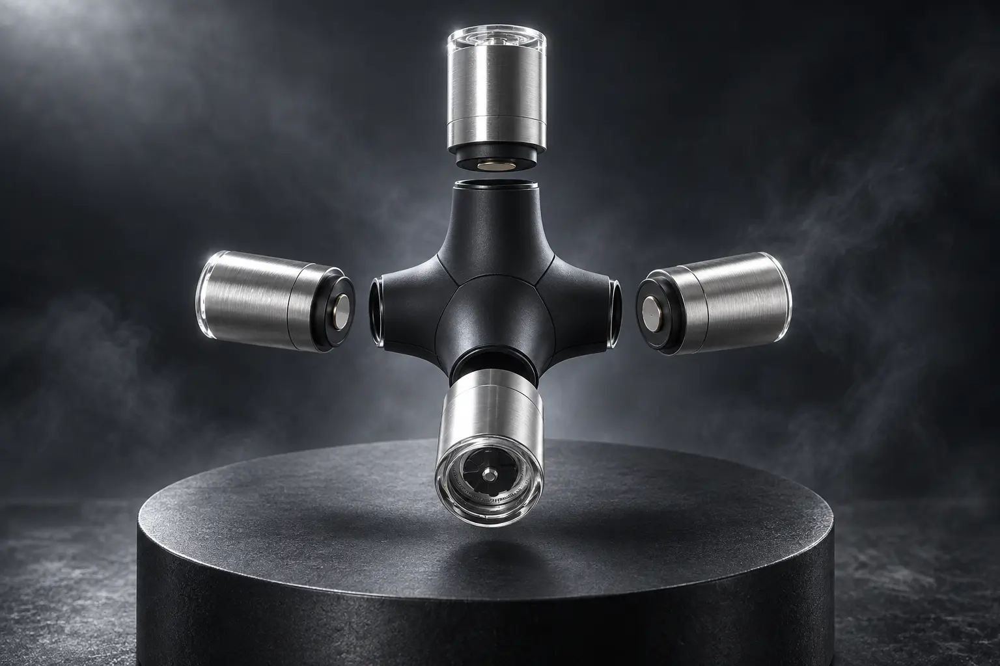
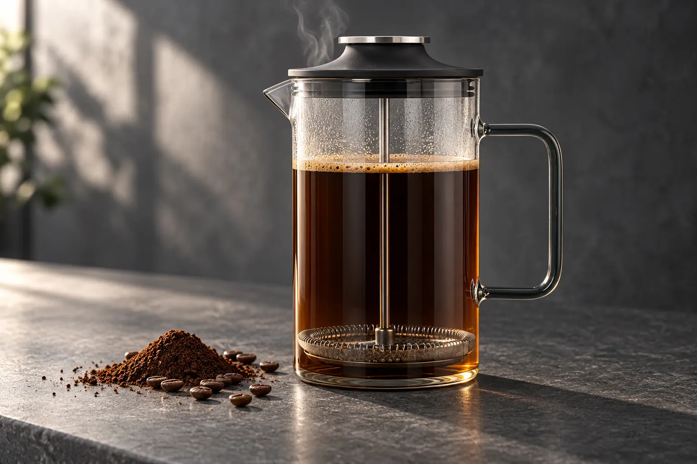
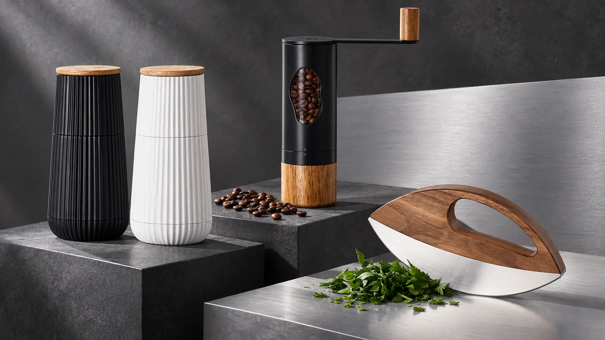
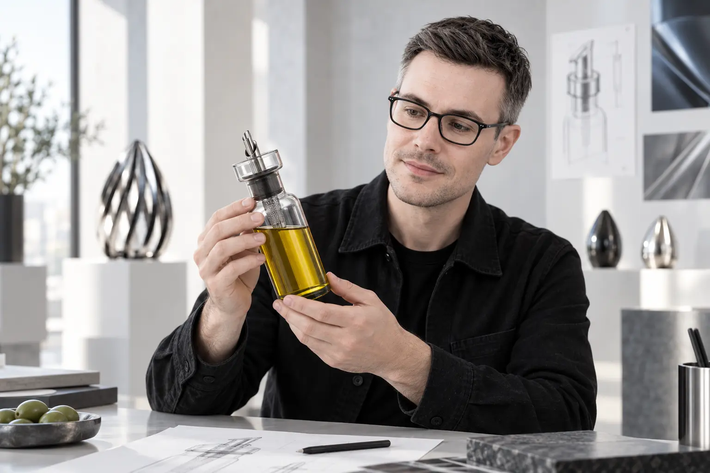
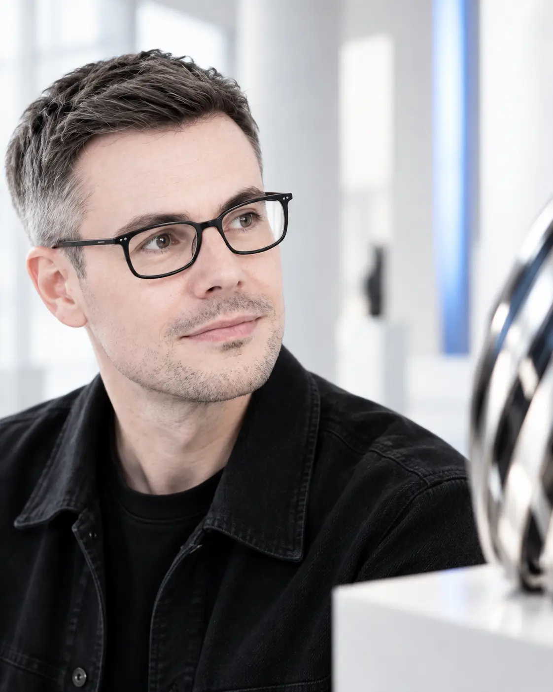

Observe
Nutzungskontext und Rituale aufmerksam lesen.
Industrial Design
for a meaningful tomorrow
Produkte, die technische Präzision und emotionale Klarheit in eine selbstverständliche Form bringen.
Projekte entdecken
01 / Haltung
Gutes Industriedesign beginnt nicht mit einer Silhouette. Es beginnt mit aufmerksamem Beobachten – von Ritualen, Materialien und den Menschen, die ein Produkt täglich benutzen.
Mehr über Roland
“Better objects
for everyday life.”
02 / Material
Oberflächen, Formen und Details sind eine Sprache. In ihnen verbindet sich technische Präzision mit einer emotionalen Qualität.

Edelstahl · Präzision · Licht
03 / Prozess
Vom ersten Gedanken bis zum serienreifen Produkt: beobachten, reduzieren, konstruieren und immer wieder prüfen.

Nutzungskontext und Rituale aufmerksam lesen.
Komplexität auf die entscheidende Idee verdichten.
Form, Konstruktion und Fertigung zusammenführen.
04 / Selected Works

AdHoc · 2024
Präzises Dosieren, tropffreies Ausgießen und sichtbares Material.
Projektkontext
AdHoc · Red Dot Winner 2022
Vier Gewürze. Ein präziser magnetischer Mittelpunkt.

AdHoc · German Design Award 2026
Der Brühvorgang wird zum sichtbaren Bestandteil des Designs.

AdHoc · Product Family
Charaktervolle Geometrie und ehrliche Materialien für jeden Tag.
Ziehen oder mit den Tasten navigieren

05 / Im Detail
Roland Kreiters Arbeiten verbinden eine reduzierte Formensprache mit einer Funktion, die man sofort versteht.
“Gutes Design begleitet – leise, aber dauerhaft.”
06 / Recognition
Internationale Anerkennung bestätigt den Anspruch – und motiviert, weiter zu denken.
mysqueeze · Jury unter Vorsitz von Philippe Starck
Magnetic 4in1 Mill GIANT · Winner
AromaPour · Winner
AromaPour · Product Design
Impact French Press · Winner, Tabletop

07 / Profile
Geboren 1983 in Rumänien, aufgewachsen in Deutschland. Nach einer Ausbildung im Produktionsmodellbau studierte Roland Kreiter Industrial Design an der Hochschule Darmstadt.
Modellbau Satzke
Hochschule Darmstadt · Diplom
Philippe Starck · Paris
Alessi · Artefakt · sieger design
AdHoc Entwicklung und Vertrieb GmbH
08 / Contact
Neue Ideen entstehen im Gespräch. Für Produktentwicklung, Industrial Design und ausgewählte Kooperationen.
Kontakt über XING